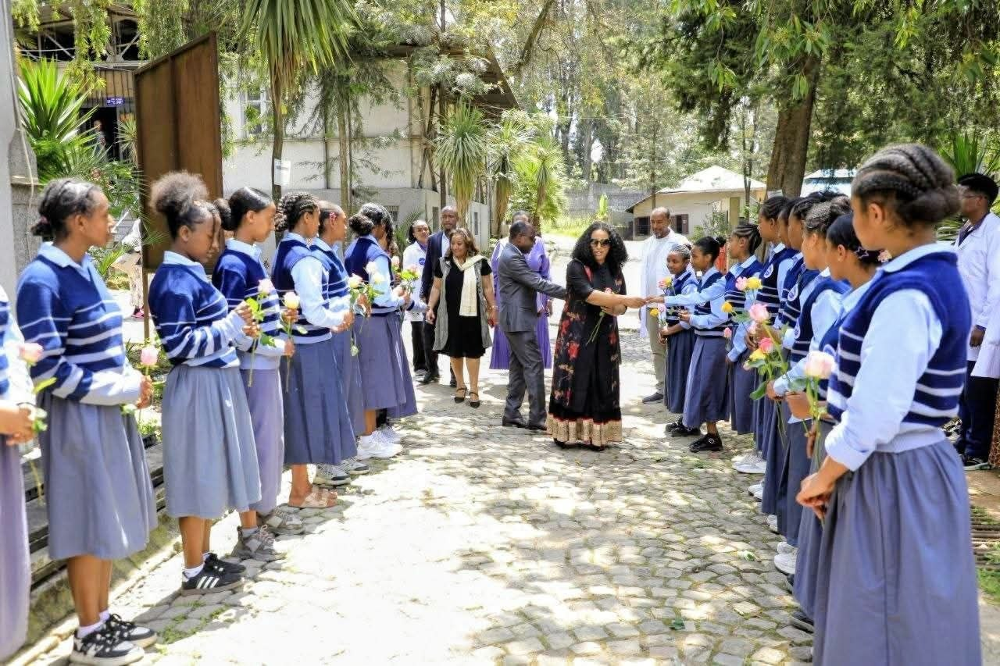

Est. 1954 E.C. · Addis Ababa
About Our School
Founded in 1954 E.C. along Comoros Street in Yeka Sub-City, Kokebe Tsibah Secondary & Preparatory School has upheld a distinguished heritage of secondary scholastic leadership, university readiness, and civic discipline in Addis Ababa.

ኮከበ ፅባህ ሁለተኛና መሰናዶ ትምህርት ቤትAcross both Natural Science and Social Science curricula, we foster deep conceptual mastery and moral character. Our dual-shift model serves thousands of aspiring scholars each academic year, guiding each student toward university entrance and purposeful lifelong contribution to society.
Guiding Values
Academic Rigor
Cultivating deep analytical comprehension, scientific inquiry, and focused preparation for higher education.
Integrity
Instilling honesty, ethical personal responsibility, and mutual respect in daily classroom and school life.
Community
Serving the wider Addis Ababa community through dedicated peer mentorship, shared service, and mutual support.